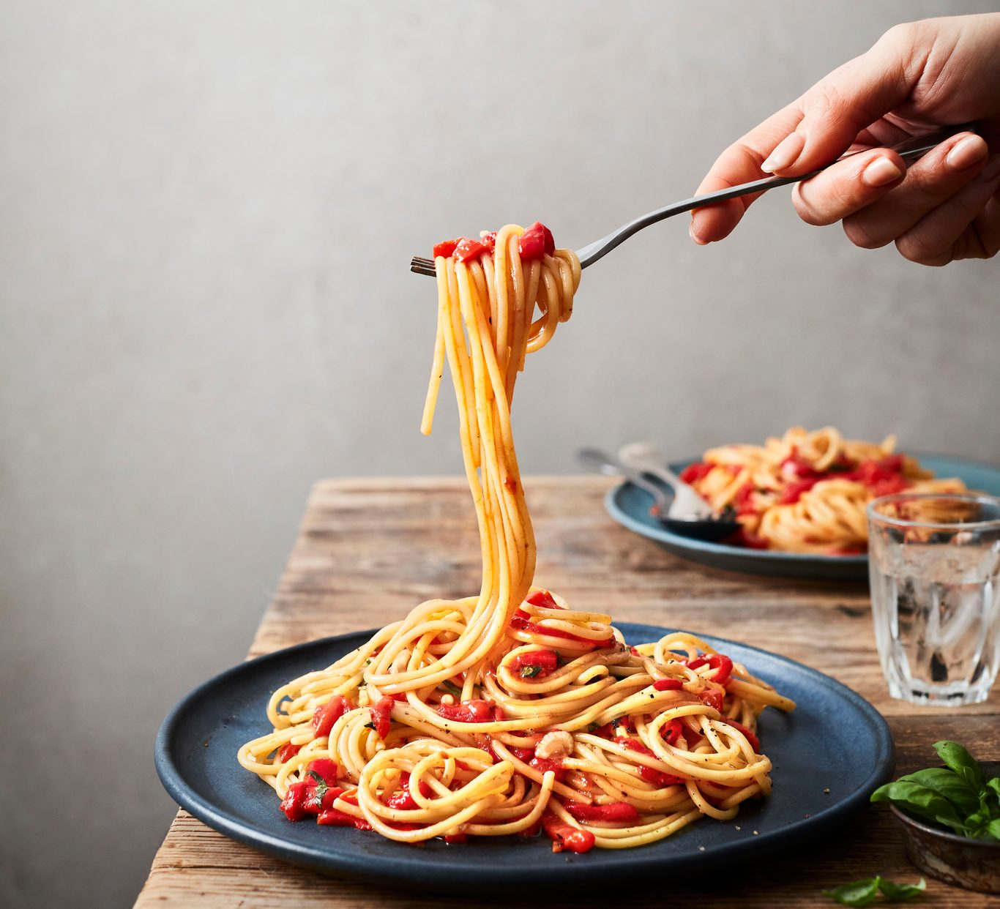

Spaghetti is a classic pasta dish featuring long, thin cylindrical noodles served with a rich, savory sauce—most commonly made with tomatoes, garlic, herbs, and ground meat.
Because you are in the Philippines, you can make either the traditional Italian-style spaghetti (savory and herb-forward) or the beloved Filipino-style spaghetti (sweet, meaty, and topped with hotdogs and cheese). Here is a quick recipe for the classic Italian version, which you can easily adapt.

Ingredients
Pasta: 400g (about 14 oz) dried spaghetti noodles
Meat & Aromatics: 500g (1 lb) ground beef or pork, 1 medium onion (chopped), and 4 cloves garlic (minced)
Sauce Base: 1 can (400g) crushed tomatoes, 2 tbsp tomato paste, and ½ cup water or beef broth
Seasonings: 1 tsp dried oregano, 1 tsp dried basil, 1 tsp salt, ½ tsp black pepper, and 2 tbsp olive oil or cooking oil
Boil pasta: Cook the spaghetti in a large pot of salted boiling water according to package directions until al dente (firm to the bite), then drain.
Sauté aromatics: Heat oil in a large pan over medium heat, then cook the onions until translucent and add the garlic for 1 minute until fragrant.
Brown meat: Add the ground meat, breaking it up with a spoon, and cook until browned; drain any excess fat.
Simmer sauce: Stir in the tomato paste, crushed tomatoes, water, oregano, basil, salt, and pepper, then simmer uncovered on low heat for 15–20 minutes until thickened.
Serve: Toss the cooked noodles directly into the sauce or ladle the sauce over plated spaghetti, then top with grated cheese.